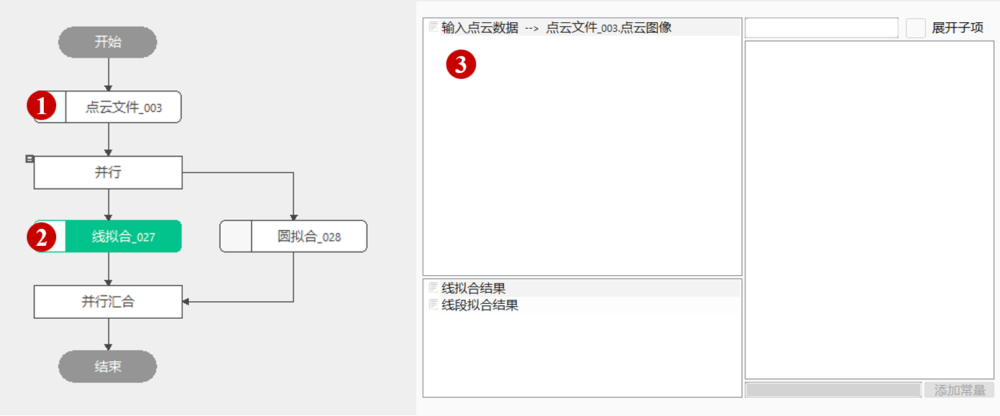
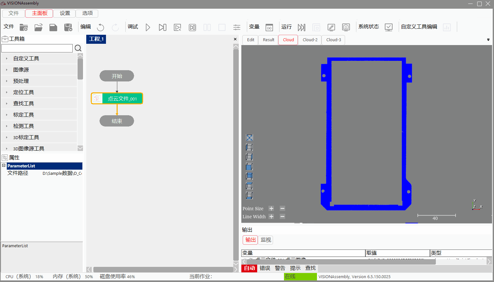
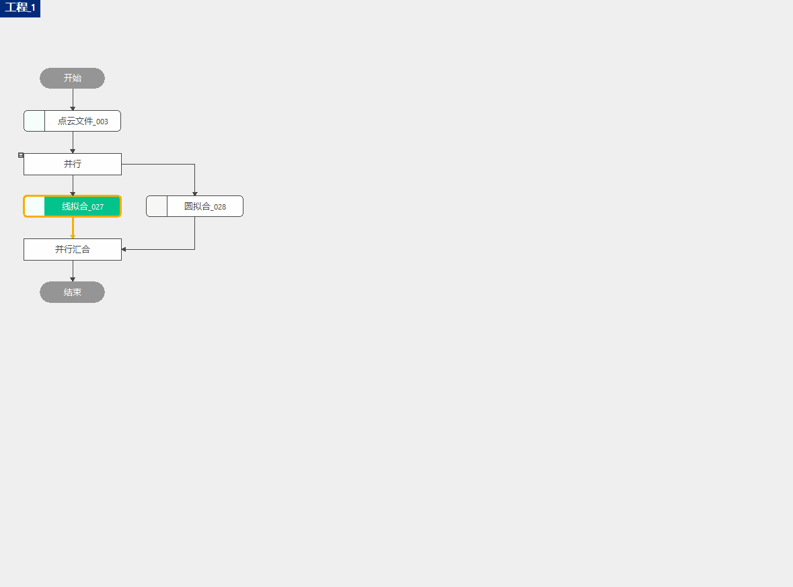
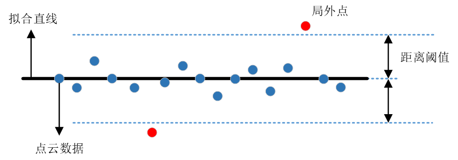
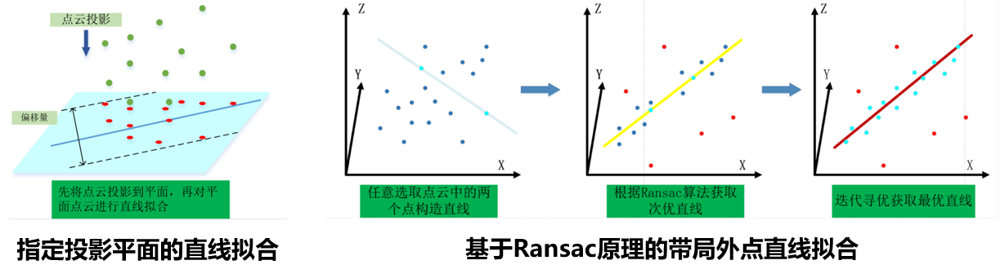
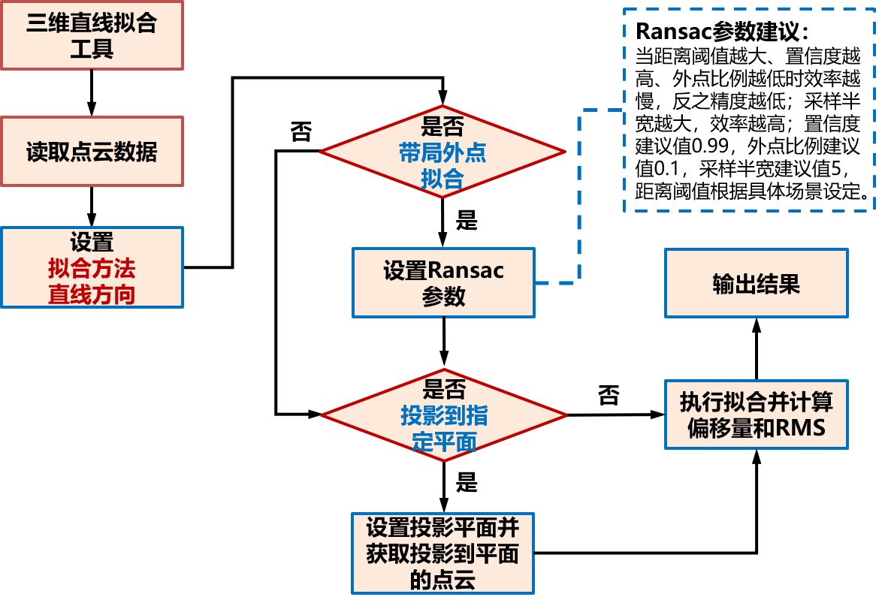

Công cụ này thực hiện chức năng khớp đường thẳng và đường tròn trong không gian, cung cấp liên kết cho chuỗi dữ liệu của các công cụ sau;
Chủ yếu được sử dụng trong dự án đo dung sai, khớp đường thẳng ba chiều khi đo độ song song, khớp mặt tròn trong đo độ tròn, cũng như các dự án khác sử dụng đường tròn hoặc đường thẳng trong không gian;
Bước 1: Thêm công cụ khớp đường thẳng và đường tròn điểm mây (2 cái), sau đó nhấp đúp mở chuỗi tham số của công cụ, liên kết tệp điểm mây, như hình 3-1 hiển thị;
Bước 2: Nhấp chuột phải vào công cụ chọn “Thuộc tính” để mở giao diện nâng cao của công cụ, như hình 3-2 hiển thị;



| Tên tham số | Mô tả tham số |
|---|---|
| Dữ liệu điểm mây đầu vào | Đầu vào hình ảnh điểm mây cần khớp |
| Đầu vào tập điểm | Đầu vào tập điểm cần khớp |
| Đầu vào mặt phẳng chiếu | Đầu vào mặt phẳng cần chiếu |
| Tên tham số | Mô tả tham số |
|---|---|
| Loại khớp | Khớp đường thẳng: sử dụng dữ liệu bên trong ROI để khớp đường thẳng ba chiều; khớp đường tròn: sử dụng dữ liệu bên trong ROI để khớp đường tròn ba chiều |
| Có bật tập điểm hay không | Chọn “Có”, thì thực hiện khớp đường thẳng và đường tròn dựa trên tập điểm đầu vào; chọn “Không”, thì thực hiện khớp đường thẳng và đường tròn dựa trên điểm mây đầu vào |
| Có sử dụng ROI hay không | Có, bật sử dụng ROI, hình dạng của ROI: hình hộp chữ nhật |
| Phương pháp khớp đường thẳng | Bao gồm ba loại: bình phương nhỏ nhất, có điểm ngoại lai và bao dung nhỏ nhất |
| Loại chiếu mặt phẳng | Bao gồm hai loại: không chiếu và chiếu mặt phẳng. Trong đó: chiếu mặt phẳng sẽ chiếu vector đường thẳng ba chiều đã khớp lên mặt phẳng đầu vào |
| Hướng đường thẳng | Bao gồm hai loại: hướng dương trục Z và hướng âm trục Z. Trong đó hướng dương trục Z: góc giữa vector pháp tuyến của đường thẳng đã khớp với hướng dương Z là góc nhọn; hướng âm trục Z: góc giữa vector pháp tuyến của đường thẳng đã khớp với hướng âm Z là góc nhọn |
Tham số giao diện nâng cao giống với tham số cửa sổ thuộc tính, các nút tương tác như sau:
| Tên nút | Mô tả tham số |
|---|---|
| Bắt đầu vẽ | Trong hình ảnh giao diện nâng cao, click và kéo chuột tại vị trí tương ứng để vẽ hộp chữ nhật ROI. |
| Tên tham số | Mô tả tham số |
|---|---|
| Vector hướng kết quả khớp đường thẳng | Vector hướng của đường thẳng đã khớp |
| Tâm tròn | Tọa độ ba chiều của tâm đường tròn đã khớp |
| Tên tham số | Mô tả tham số |
|---|---|
| RMS | Giá trị RMS của các điểm dữ liệu tham gia khớp |
| Kết quả khớp đường thẳng | StartPoint：Tọa độ ba chiều của điểm bắt đầu đường thẳng đã khớp; EndPoint：Tọa độ ba chiều của điểm kết thúc đường thẳng đã khớp; Direction：Hướng của đường thẳng đã khớp; Tilt：Góc nghiêng của đường thẳng đã khớp; Rotation：Góc giữa vector chiếu của vector hướng đường thẳng đã khớp trên mặt phẳng XOY với hướng dương trục X |
| Vector hướng kết quả khớp đường thẳng | Vector hướng của đường thẳng đã khớp |
| Kết quả khớp đoạn thẳng | Pos：Tọa độ ba chiều của một điểm trên đường thẳng đã khớp; Dir：Hướng của đường thẳng đã khớp; Tilt：Góc nghiêng của đường thẳng đã khớp; Rotation：Góc giữa vector chiếu của vector hướng đường thẳng đã khớp trên mặt phẳng XOY với hướng dương trục X |
| Kết quả khớp đường tròn | Kết quả khớp đường tròn: tâm tròn, tọa độ ba chiều của tâm đường tròn đã khớp; vector pháp tuyến, vector pháp tuyến mặt phẳng của đường tròn đã khớp; bán kính, bán kính của đường tròn đã khớp, đơn vị: mm |
| Tâm tròn | Tọa độ ba chiều của tâm đường tròn đã khớp |
| Kết quả thực thi | Kết quả thực thi của công cụ |
| Thời gian thực thi | Thời gian thực thi của công cụ |
Tham khảo “\Samples\3D\Điểm mây\Căn chỉnh hệ tọa độ điểm mây.gvp”。
Ngưỡng khoảng cách：Là giá trị khoảng cách tối đa từ điểm đến đường thẳng đã khớp;
Điểm ngoại lai：Là điểm mà khoảng cách từ điểm dữ liệu điểm mây đến đường thẳng đã khớp không thỏa mãn ngưỡng khoảng cách;
Điểm nội：Là điểm mà khoảng cách từ điểm dữ liệu điểm mây đến đường thẳng đã khớp nằm trong ngưỡng khoảng cách;
Tỷ lệ điểm ngoại lai：Tỷ lệ điểm ngoại lai chiếm tổng số điểm dữ liệu điểm mây, trong đó tổng của điểm nội và điểm ngoại bằng tổng số điểm dữ liệu điểm mây;
Độ tin cậy：Đo lường mức độ tin cậy khi sử dụng điểm nội để xây dựng đường thẳng đã khớp, độ tin cậy càng lớn, đường thẳng đã khớp càng đáng tin cậy;
Mặt phẳng chiếu：Mặt phẳng chiếu được chỉ định trong quá trình khớp đường thẳng ba chiều, đường thẳng đã khớp nằm trên mặt phẳng đó;

Khớp bình phương nhỏ nhất：Nhập dữ liệu điểm mây, khớp để thu được đường thẳng tối ưu;
Khớp có điểm ngoại lai：Loại bỏ điểm ngoại lai của dữ liệu điểm mây sau đó khớp để thu được đường thẳng tối ưu;
Bao dung nhỏ nhất：Khoảng cách xa nhất từ điểm trên điểm mây đến đường thẳng đã khớp là nhỏ nhất, tức bán kính hoặc chiều rộng vùng dung sai là nhỏ nhất;


Bình phương nhỏ nhất：Nhập dữ liệu điểm mây, khớp để thu được đường tròn tối ưu;
Có điểm ngoại lai：Loại bỏ điểm ngoại lai của dữ liệu điểm mây sau đó khớp để thu được đường tròn tối ưu;
Bao dung nhỏ nhất：Khoảng cách tối đa từ điểm mây chiếu lên mặt phẳng chuẩn đến đường tròn này là nhỏ nhất;
Ngoại tiếp nhỏ nhất：Điểm mây chiếu lên mặt phẳng chuẩn đều nằm bên trong đường tròn này, và bán kính đường tròn là nhỏ nhất;
Nội tiếp lớn nhất：Điểm mây chiếu lên mặt phẳng chuẩn đều nằm bên ngoài đường tròn này, và bán kính đường tròn là lớn nhất;